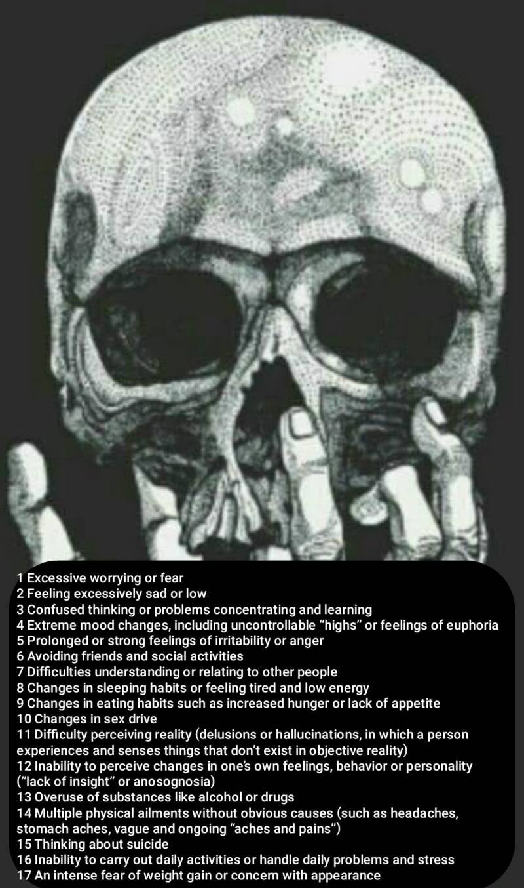
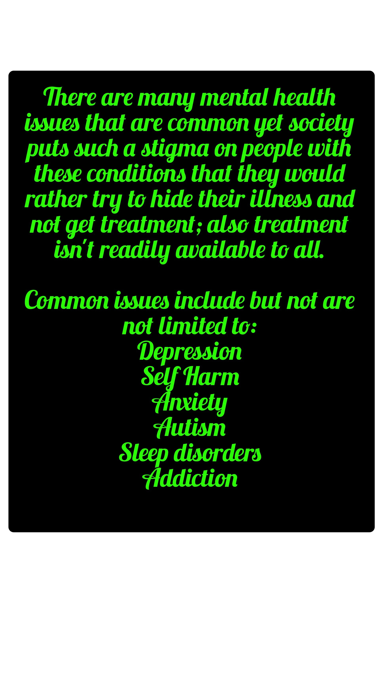
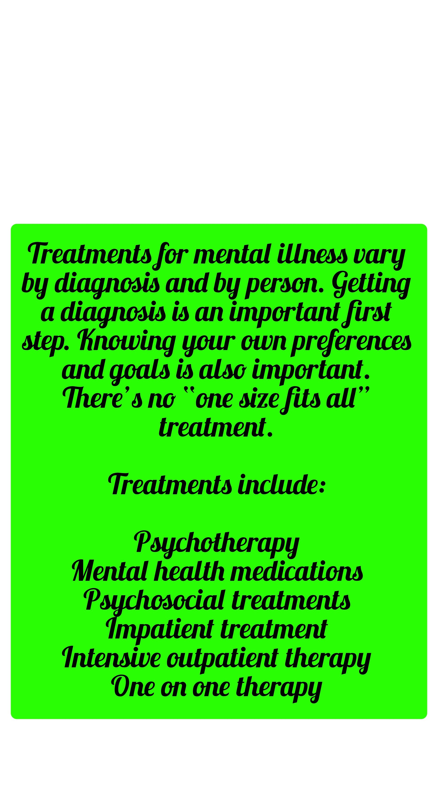

Mental Health
It's okay not
to be okay.
But you don't have to stay there alone. Twizted Journeys is here — not as a counseling service, but as a community that gets it, walks alongside you, and refuses to let you disappear.
But you don't have to stay there alone. Twizted Journeys is here — not as a counseling service, but as a community that gets it, walks alongside you, and refuses to let you disappear.
Mental health includes our emotional, psychological, and social well-being. It affects how we think, feel, and act — and how we handle stress, relate to others, and make choices. Mental health is important at every stage of life, from childhood through adulthood.
Mental illness is common. It is not weakness. It is not something to be ashamed of. And it is not something people can just "get over." It requires care, connection, and sometimes professional support.
"It's okay not to be okay."
We say this not as a platitude — but as a promise that you won't be judged here.




Knowing the language helps break the stigma. These are real, treatable medical conditions.
More than sadness — depression is persistent low mood, loss of interest, fatigue, and often hopelessness. It affects millions and is highly treatable with the right support.
Anxiety disorders are the most common mental health condition. Racing thoughts, physical tension, avoidance, panic — anxiety can feel overwhelming, but treatment works.
Characterized by episodes of mania and depression. People with bipolar disorder can and do live full, meaningful lives with the right care and community support.
Post-traumatic stress disorder can follow any traumatic experience — not just combat. Flashbacks, hypervigilance, and emotional numbing are real symptoms, not excuses.
Substance use disorders often go hand-in-hand with mental illness. Twizted Journeys recognizes the connection and supports people navigating both.
Losing someone to suicide, overdose, or illness creates a specific kind of grief. There is no timeline. Finding Forward exists for this exact journey.
Stigma is one of the biggest barriers to people getting help. When mental illness is treated as weakness, failure, or something to be ashamed of — people suffer in silence. That silence kills.
Twizted Journeys was built to break that silence — loudly, visibly, and without apology. We ride. We walk. We share stories. We print names on shirts. We show up.
Finding Forward is Twizted Journeys' Tuesday evening peer support group — for suicide loss survivors and anyone navigating the hard walk after loss. Free. Low-barrier. Community-centered. Adults 18+. Open to all backgrounds and identities.
This is not a clinical group. It's a room full of people who understand — because they've been there too. No judgment. No pressure. Just community.
Email for Meeting DetailsHealing isn't linear. Some days surviving is enough. Here are small things that can help.
Even a short walk changes brain chemistry. Twizted Journeys rides and walks aren't just events — they're intentional acts of forward motion, together.
Telling one person how you're really doing is one of the bravest things you can do. It doesn't have to be perfect. It just has to be true.
Text 988. Text HOME to 741741. Email us. Show up to Finding Forward. Reaching is not weakness — it's the hardest and bravest step.
Organizations and lines Twizted Journeys recommends.
Call or text 988. Free, confidential, 24/7. For any mental health crisis — not just suicidal thoughts.
988lifeline.orgText HOME to 741741. Free. 24/7. No phone call required — just text.
crisistextline.orgEducation, support groups (NAMI Family Support Group, NAMI Peer-to-Peer), and advocacy for mental health.
nami.orgResearch, resources, and community walks. TJ is a proud AFSP advocate.
afsp.orgSupport and resources for those affected by addiction and overdose loss in Indiana.
overdoselifeline.orgCall 988 and press 1. Or text 838255. Staffed by Veterans Affairs responders 24/7.
veteranscrisisline.netCall or text 988 — available 24/7, free & confidential.
988lifeline.org